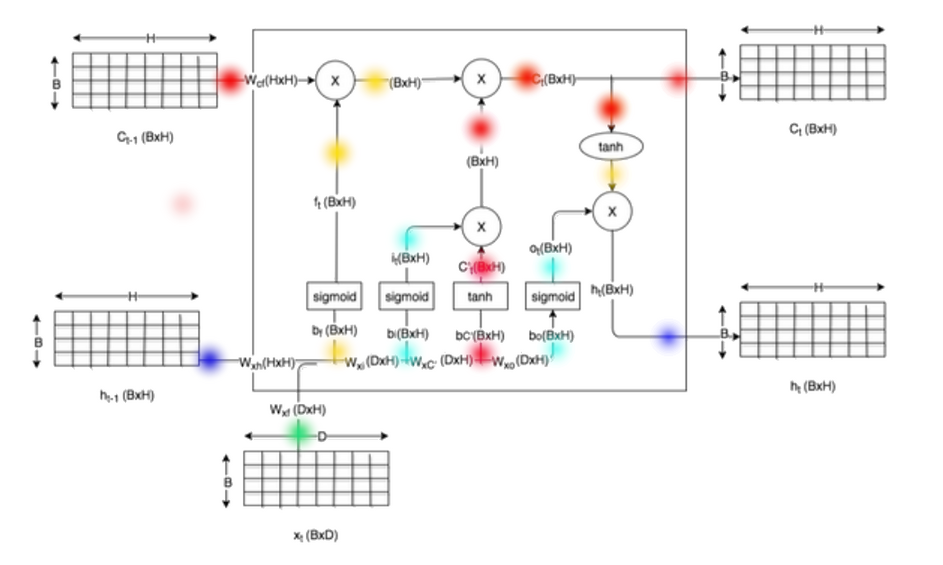

NN Benchmark
Table of Contents
1 NN Benchmark
1.1 How To Calculate FLOPs
1.1.1 MatMul FLOPs
- input 为 [1, M]
- weight 为 [M, N]
- output 为 [1, N]
[1,M]*[M,N] 的 FLOPs 为 M*N*2
1.1.2 Conv2d FLOPs
- input 为 [1, x1, y1, c]
- filter 为 [o, a, b, c]
- output 为 [1, x2, y2, o]
FLOPs 为 a*b*c*2*(x2*y2*o)
这里并没有考虑 conv2d 的 stride, 因为 stride 已经隐含在 output 的 size 里了:
output 的 size 为 (x2*y2*o), 对于 output 的每一个点, 都需要 [a,b,c] 大小的 MatMul
1.1.3 Deconv2D FLOPs
file:~/Gitbox/drops/note/machine_learning/cnn.org
- 对于第一种转换为 Conv2D 的方法, 效率不高, 其 flops 与 Conv2D 相同, 即 a*b*c*o*(x2*y2)*2
- 对于第二种使用 col2im 的方法, 其 flops 等于 Cout*Kh*Kw*Cin*Hin*Win*2, 即 a*b*c*o*(x1*y1)*2
1.1.4 DepthwiseConv2d FLOPs
- input 为 [1, x1, y1, c]
- filter 为 [o, a, b, c]
- output 为 [1, x2, y2, o]
FLOPs 为 a*b*(x2*y2*o)*2+c*x2*y2*o*2
DepthwiseConv2d 相比 Conv2d FLOPs 减少为 1/c, 因为对于 output 的每一个点, 先做一个 [a,b] 大小的 MatMul, 然后再进行 c 次相加, 最终为 a*b*2+c, 而不是 a*b*2*c, 忽略掉 +c 就成为 a*b*2
1.2 tensorflow benchmark_model
https://github.com/tensorflow/tensorflow/tree/master/tensorflow/tools/graph_transforms https://github.com/onnx/onnx-tensorflow/tree/tf-1.x
1.2.1 tensorflow benchmark_model
tensorflow/tools/benchmark 可以用来查看 frozen_graph 的 flops
由于 frozen_graph 是 tensorflow 1.x 的格式, 所以保险起见, 先把 tensorflow checkout 到 1.14
# 使用 summarize_graph 可以查看 model 的输入输出信息 $> bazel build tensorflow/tools/graph_transforms:summarize_graph $> bazel-bin/tensorflow/tools/graph_transforms/summarize_graph --in_graph=xxx.pb # 使用 benchmark_model 查看 flops $> bazel build opt tensorflow/tools/benchmark:benchmark_model $> ./bazel-bin/tensorflow/tools/benchmark/benchmark_model --graph=/tmp/xxx.pb --show_flops --input_layer=input_1,input_2 --input_layer_type=float,float --input_layer_shape=1,12,128,256:1,8 --output_layer=outputs
1.2.2 onnx 转换为 frozen_graph
pip install onnx==1.8.0
最新的 1.8.1 使用 onnx_tf 时有问题
安装 1.x 版本的 onnx_tf
git clone https://github.com/onnx/onnx-tensorflow.git && cd onnx-tensorflow git checkout tf-1.x. pip install -e .
转换 onnx 为 pb
onnx-tf convert -i /path/to/input.onnx -o /path/to/output.pb
使用 tensorflow benchmark_model
以 openpilot 的 supercombo.onnx 为例:
./bazel-bin/tensorflow/tools/benchmark/benchmark_model --graph=/tmp/supercombo.pb --show_flops --input_layer=input_imgs,desire,traffic_convention,initial_state --input_layer_type=float,float,float,float --input_layer_shape=1,12,128,256:1,8:1,2:1,512 --output_layer=outputs
output:
2021-02-25 20:25:25.800616: I tensorflow/tools/benchmark/benchmark_model.cc:470] Graph: [/tmp/supercombo.pb] 2021-02-25 20:25:25.800682: I tensorflow/tools/benchmark/benchmark_model.cc:471] Init ops: 2021-02-25 20:25:25.800686: I tensorflow/tools/benchmark/benchmark_model.cc:472] Input layers: [input_imgs,desire,traffic_convention,initial_state] 2021-02-25 20:25:25.800689: I tensorflow/tools/benchmark/benchmark_model.cc:473] Input shapes: [1,12,128,256:1,8:1,2:1,512] 2021-02-25 20:25:25.800691: I tensorflow/tools/benchmark/benchmark_model.cc:474] Input types: [float,float,float,float] 2021-02-25 20:25:25.800693: I tensorflow/tools/benchmark/benchmark_model.cc:475] Output layers: [outputs] 2021-02-25 20:25:25.800696: I tensorflow/tools/benchmark/benchmark_model.cc:476] Target layers: [] 2021-02-25 20:25:25.800702: I tensorflow/tools/benchmark/benchmark_model.cc:477] Num runs: [1000] 2021-02-25 20:25:25.800705: I tensorflow/tools/benchmark/benchmark_model.cc:478] Inter-inference delay (seconds): [-1.0] 2021-02-25 20:25:25.800707: I tensorflow/tools/benchmark/benchmark_model.cc:479] Inter-benchmark delay (seconds): [-1.0] 2021-02-25 20:25:25.800709: I tensorflow/tools/benchmark/benchmark_model.cc:481] Num threads: [-1] 2021-02-25 20:25:25.800712: I tensorflow/tools/benchmark/benchmark_model.cc:482] Benchmark name: [] 2021-02-25 20:25:25.800714: I tensorflow/tools/benchmark/benchmark_model.cc:483] Output prefix: [] 2021-02-25 20:25:25.800716: I tensorflow/tools/benchmark/benchmark_model.cc:484] Show sizes: [0] 2021-02-25 20:25:25.800719: I tensorflow/tools/benchmark/benchmark_model.cc:485] Warmup runs: [1] 2021-02-25 20:25:25.800721: I tensorflow/tools/benchmark/benchmark_model.cc:251] Loading TensorFlow. 2021-02-25 20:25:25.800733: I tensorflow/tools/benchmark/benchmark_model.cc:259] Got config, 0 devices 2021-02-25 20:25:25.800784: I tensorflow/core/platform/cpu_feature_guard.cc:142] Your CPU supports instructions that this TensorFlow binary was not compiled to use: SSE4.1 SSE4.2 AVX AVX2 AVX512F FMA 2021-02-25 20:25:26.265483: I tensorflow/tools/benchmark/benchmark_model.cc:497] Initialized session in 0.464731s 2021-02-25 20:25:26.265529: I tensorflow/tools/benchmark/benchmark_model.cc:328] Running benchmark for max 1 iterations, max -1 seconds without detailed stat logging, with -1s sleep between inferences 2021-02-25 20:25:46.292033: I tensorflow/tools/benchmark/benchmark_model.cc:362] count=1 curr=20025708 2021-02-25 20:25:46.292109: I tensorflow/tools/benchmark/benchmark_model.cc:328] Running benchmark for max 1000 iterations, max 10 seconds without detailed stat logging, with -1s sleep between inferences 2021-02-25 20:25:56.322959: I tensorflow/tools/benchmark/benchmark_model.cc:362] count=40 first=241748 curr=233194 min=232000 max=322948 avg=250314 std=17986 2021-02-25 20:25:56.323014: I tensorflow/tools/benchmark/benchmark_model.cc:328] Running benchmark for max 1000 iterations, max 10 seconds with detailed stat logging, with -1s sleep between inferences 2021-02-25 20:26:09.585946: I tensorflow/core/profiler/lib/profiler_session.cc:174] Profiler session started. 2021-02-25 20:26:10.181888: I tensorflow/core/profiler/lib/profiler_session.cc:174] Profiler session started. 2021-02-25 20:26:10.765936: I tensorflow/tools/benchmark/benchmark_model.cc:362] count=24 first=405976 curr=411379 min=396319 max=465712 avg=422021 std=16559 2021-02-25 20:26:10.765988: I tensorflow/tools/benchmark/benchmark_model.cc:601] Average inference timings in us: Warmup: 20025708, no stats: 250314, with stats: 422020 2021-02-25 20:26:11.235384: I tensorflow/core/util/stat_summarizer.cc:85] ============================== Run Order ============================== 2021-02-25 20:26:11.235413: I tensorflow/core/util/stat_summarizer.cc:85] [node type] [start] [first] [avg ms] [%] [cdf%] [mem KB] [times called] [Name] ... ... ... ... 2021-02-25 20:26:20.138084: I tensorflow/core/util/stat_summarizer.cc:85] Add 282.257 0.003 0.005 0.000% 99.942% 0.000 1 ArithmeticOptimizer/AddOpsRewrite_onnx_tf_prefix_Add_211 2021-02-25 20:26:20.138090: I tensorflow/core/util/stat_summarizer.cc:85] Relu 282.265 0.002 0.004 0.000% 99.942% 0.000 1 onnx_tf_prefix_Relu_212 2021-02-25 20:26:20.138096: I tensorflow/core/util/stat_summarizer.cc:85] MatMul 282.274 1.422 1.353 0.043% 99.985% 39.620 1 MatMul_50 2021-02-25 20:26:20.138101: I tensorflow/core/util/stat_summarizer.cc:85] Add 283.632 0.012 0.013 0.000% 99.985% 0.000 1 add_120 2021-02-25 20:26:20.138107: I tensorflow/core/util/stat_summarizer.cc:85] ConcatV2 283.647 0.032 0.036 0.001% 99.986% 45.308 1 outputs 2021-02-25 20:26:20.138112: I tensorflow/core/util/stat_summarizer.cc:85] _Retval 283.688 0.337 0.429 0.014% 100.000% 0.000 1 _retval_outputs_0_0 2021-02-25 20:26:20.139207: I tensorflow/core/util/stat_summarizer.cc:85] 2021-02-25 20:26:20.139216: I tensorflow/core/util/stat_summarizer.cc:85] ============================== Top by Computation Time ============================== 2021-02-25 20:26:20.139223: I tensorflow/core/util/stat_summarizer.cc:85] [node type] [start] [first] [avg ms] [%] [cdf%] [mem KB] [times called] [Name] 2021-02-25 20:26:20.139229: I tensorflow/core/util/stat_summarizer.cc:85] Split 254.816 5.744 6.644 0.210% 0.210% 506.880 1 split_133 2021-02-25 20:26:20.139235: I tensorflow/core/util/stat_summarizer.cc:85] Split 53.459 5.143 5.179 0.164% 0.374% 1350.720 1 split_31 2021-02-25 20:26:20.139241: I tensorflow/core/util/stat_summarizer.cc:85] Split 40.866 4.568 5.011 0.159% 0.533% 1292.544 1 split_25 2021-02-25 20:26:20.139247: I tensorflow/core/util/stat_summarizer.cc:85] <> 53.461 4.980 5.004 0.159% 0.692% 0.000 1 split_31:Split 2021-02-25 20:26:20.139252: I tensorflow/core/util/stat_summarizer.cc:85] <> 40.868 4.422 4.855 0.154% 0.846% 0.000 1 split_25:Split 2021-02-25 20:26:20.139258: I tensorflow/core/util/stat_summarizer.cc:85] Split 175.495 4.303 4.801 0.152% 0.998% 479.232 1 split_103 2021-02-25 20:26:20.139263: I tensorflow/core/util/stat_summarizer.cc:85] Conv2D -6.620 1.790 4.780 0.151% 1.149% 32.768 1 convolution_26 2021-02-25 20:26:20.139269: I tensorflow/core/util/stat_summarizer.cc:85] <> -6.615 1.768 4.758 0.151% 1.300% 0.000 1 convolution_26:Conv2D 2021-02-25 20:26:20.139274: I tensorflow/core/util/stat_summarizer.cc:85] Split 223.171 4.387 4.737 0.150% 1.450% 479.232 1 split_121 2021-02-25 20:26:20.139281: I tensorflow/core/util/stat_summarizer.cc:85] Split 127.178 4.941 4.716 0.149% 1.599% 691.200 1 split_79 2021-02-25 20:26:20.139286: I tensorflow/core/util/stat_summarizer.cc:85] 2021-02-25 20:26:20.139292: I tensorflow/core/util/stat_summarizer.cc:85] ============================== Top by Memory Use ============================== 2021-02-25 20:26:20.139298: I tensorflow/core/util/stat_summarizer.cc:85] [node type] [start] [first] [avg ms] [%] [cdf%] [mem KB] [times called] [Name] 2021-02-25 20:26:20.139304: I tensorflow/core/util/stat_summarizer.cc:85] Split 19.637 1.138 1.210 0.038% 0.038% 3219.840 1 split_13 2021-02-25 20:26:20.139309: I tensorflow/core/util/stat_summarizer.cc:85] Transpose 18.954 0.643 0.676 0.021% 0.060% 3219.840 1 transpose_19 2021-02-25 20:26:20.139315: I tensorflow/core/util/stat_summarizer.cc:85] Pad 18.091 0.859 0.856 0.027% 0.087% 3219.840 1 Pad_3 2021-02-25 20:26:20.139320: I tensorflow/core/util/stat_summarizer.cc:85] Transpose 16.562 1.160 1.146 0.036% 0.123% 3145.728 1 transpose_17 2021-02-25 20:26:20.139326: I tensorflow/core/util/stat_summarizer.cc:85] Conv2D 15.615 0.687 0.708 0.022% 0.146% 3145.728 1 convolution_51 2021-02-25 20:26:20.139332: I tensorflow/core/util/stat_summarizer.cc:85] Transpose -10.711 0.603 0.407 0.013% 0.158% 1591.344 1 transpose_1 2021-02-25 20:26:20.139338: I tensorflow/core/util/stat_summarizer.cc:85] Pad -12.720 0.638 1.990 0.063% 0.222% 1591.344 1 Pad 2021-02-25 20:26:20.139346: I tensorflow/core/util/stat_summarizer.cc:85] Split 53.459 5.143 5.179 0.164% 0.386% 1350.720 1 split_31 2021-02-25 20:26:20.139352: I tensorflow/core/util/stat_summarizer.cc:85] Transpose 52.994 0.453 0.459 0.015% 0.400% 1350.720 1 transpose_46 2021-02-25 20:26:20.139357: I tensorflow/core/util/stat_summarizer.cc:85] Pad 52.617 0.277 0.369 0.012% 0.412% 1350.720 1 Pad_6 2021-02-25 20:26:20.139363: I tensorflow/core/util/stat_summarizer.cc:85] 2021-02-25 20:26:20.139368: I tensorflow/core/util/stat_summarizer.cc:85] Number of nodes executed: 45785 2021-02-25 20:26:20.139375: I tensorflow/core/util/stat_summarizer.cc:85] ============================== Summary by node type ============================== 2021-02-25 20:26:20.139380: I tensorflow/core/util/stat_summarizer.cc:85] [Node type] [count] [avg ms] [avg %] [cdf %] [mem KB] [times called] 2021-02-25 20:26:20.139386: I tensorflow/core/util/stat_summarizer.cc:85] Conv2D 14831 1876.650 59.892% 59.892% 25583.615 14831 2021-02-25 20:26:20.139392: I tensorflow/core/util/stat_summarizer.cc:85] <> 15367 1044.754 33.343% 93.235% 0.000 15367 2021-02-25 20:26:20.139397: I tensorflow/core/util/stat_summarizer.cc:85] Split 23 87.226 2.784% 96.019% 18154.367 23 2021-02-25 20:26:20.139403: I tensorflow/core/util/stat_summarizer.cc:85] Const 15035 36.298 1.158% 97.177% 0.000 15035 2021-02-25 20:26:20.139408: I tensorflow/core/util/stat_summarizer.cc:85] ConcatV2 28 27.483 0.877% 98.054% 9747.844 28 2021-02-25 20:26:20.139414: I tensorflow/core/util/stat_summarizer.cc:85] Transpose 134 26.966 0.861% 98.915% 56783.793 134 2021-02-25 20:26:20.139419: I tensorflow/core/util/stat_summarizer.cc:85] Pad 24 9.531 0.304% 99.219% 19745.713 24 2021-02-25 20:26:20.139425: I tensorflow/core/util/stat_summarizer.cc:85] MatMul 61 7.711 0.246% 99.465% 75.516 61 2021-02-25 20:26:20.139431: I tensorflow/core/util/stat_summarizer.cc:85] Add 151 7.482 0.239% 99.704% 0.000 151 2021-02-25 20:26:20.139437: I tensorflow/core/util/stat_summarizer.cc:85] Elu 48 6.234 0.199% 99.903% 0.000 48 2021-02-25 20:26:20.139443: I tensorflow/core/util/stat_summarizer.cc:85] NoOp 1 1.822 0.058% 99.961% 0.000 1 2021-02-25 20:26:20.139449: I tensorflow/core/util/stat_summarizer.cc:85] Relu 45 0.469 0.015% 99.976% 0.000 45 2021-02-25 20:26:20.139455: I tensorflow/core/util/stat_summarizer.cc:85] _Retval 1 0.429 0.014% 99.990% 0.000 1 2021-02-25 20:26:20.139461: I tensorflow/core/util/stat_summarizer.cc:85] AddN 14 0.172 0.005% 99.995% 0.000 14 2021-02-25 20:26:20.139468: I tensorflow/core/util/stat_summarizer.cc:85] Reshape 10 0.063 0.002% 99.997% 0.000 10 2021-02-25 20:26:20.139474: I tensorflow/core/util/stat_summarizer.cc:85] SplitV 2 0.039 0.001% 99.998% 12.288 2 2021-02-25 20:26:20.139480: I tensorflow/core/util/stat_summarizer.cc:85] Sigmoid 2 0.014 0.000% 99.999% 0.000 2 2021-02-25 20:26:20.139486: I tensorflow/core/util/stat_summarizer.cc:85] _Arg 4 0.011 0.000% 99.999% 0.000 4 2021-02-25 20:26:20.140989: I tensorflow/core/util/stat_summarizer.cc:85] Sub 1 0.010 0.000% 99.999% 2.048 1 2021-02-25 20:26:20.140999: I tensorflow/core/util/stat_summarizer.cc:85] Mul 2 0.010 0.000% 100.000% 0.000 2 2021-02-25 20:26:20.141004: I tensorflow/core/util/stat_summarizer.cc:85] Tanh 1 0.007 0.000% 100.000% 0.000 1 2021-02-25 20:26:20.141009: I tensorflow/core/util/stat_summarizer.cc:85] 2021-02-25 20:26:20.141015: I tensorflow/core/util/stat_summarizer.cc:85] Timings (microseconds): count=24 first=2817558 curr=3115720 min=2660051 max=4166384 avg=3.15699e+06 std=358373 2021-02-25 20:26:20.141020: I tensorflow/core/util/stat_summarizer.cc:85] Memory (bytes): count=24 curr=130105184(all same) 2021-02-25 20:26:20.141026: I tensorflow/core/util/stat_summarizer.cc:85] 45785 nodes observed 2021-02-25 20:26:20.141031: I tensorflow/core/util/stat_summarizer.cc:85] 2021-02-25 20:26:36.958575: I tensorflow/tools/benchmark/benchmark_model.cc:636] FLOPs estimate: 921.31M 2021-02-25 20:26:36.958608: I tensorflow/tools/benchmark/benchmark_model.cc:638] FLOPs/second: 3.68B
1.3 DONE LSTM Profiling
- State "DONE" from "TODO"

1.3.1 MACs
- \(f_t\), \(i_t\), \(C'_t\), \(o_t\) 四个操作需要 matmul 操作, MACs (乘加操作) 均为 D*H + H*H
- \(C_t\), \(h_t\) 相关操作都是矩阵按位相乘, FLOPs 为 4*H, 可以忽略
B 为 1 时, 总计需要 4*H*(D+H) 次 MACs
1.3.2 memory
关于内存消耗, 和执行时的内存分配算法有关, 我手动分配了一下, 看起来需要:
- C, H 各需要一个大小为 \(B \times H\) 的 buffer (图中的红色和蓝色)
- 内部中间结果至少需要两个大小为 \(B \times H\) 的 buffer (图中的黄色和青色)
所以 inference 时一共需要 4*B*H 大小的 buffer, B 为 1 时, 需要 4*H
1.3.3 weight
\(f_t\), \(i_t\), \(C'_t\), \(o_t\) 四个操作各需一个 \(H \times H\) 和 \(D \times H\) 的 weight, 所以模型的 weight 大小是 4*H*(D+H)
1.3.4 说明
试了下 tensorflow 的 profiling 相关的工具都不支持 RNN, 所以只能自己粗略的计算一下, 可能是错的…毕竟没有实际检验过.
另外, 以上的计算是针对 inference 的, training 时需要的内存会远大于 inference
关上上面的符号:
- H 表示 hidden state 的大小 (假设 cell state 大小与 hidden state 相同)
- D 表示序列中单个 item 的长度
- B 是 batch size
图中的红黄蓝绿是用来表示针对中间结果的可能的一种内存分配方案
1.4 WAIT tflite benchmark